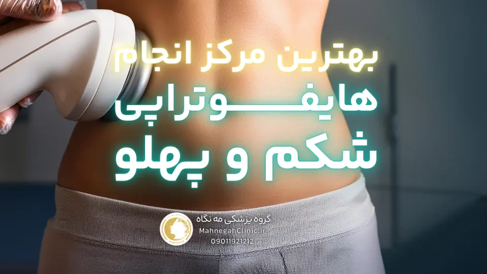
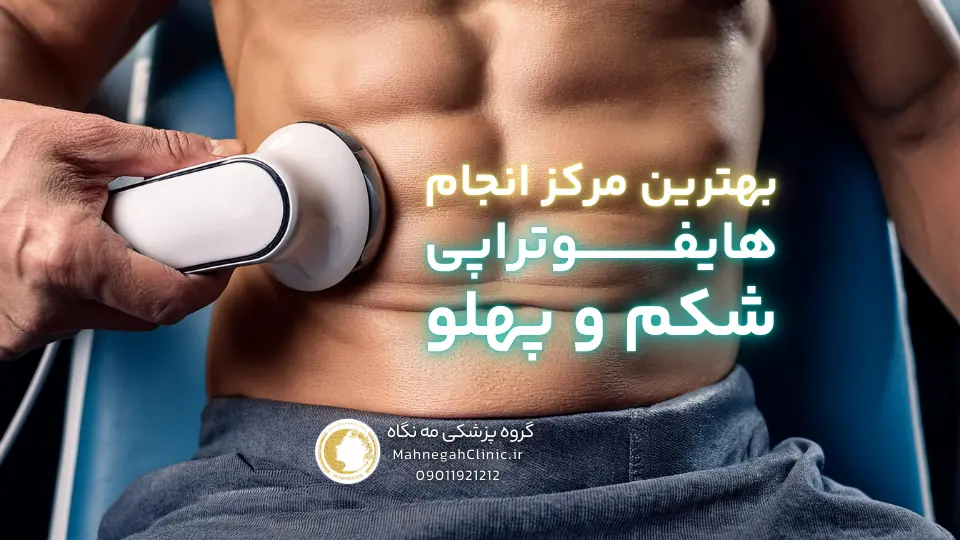
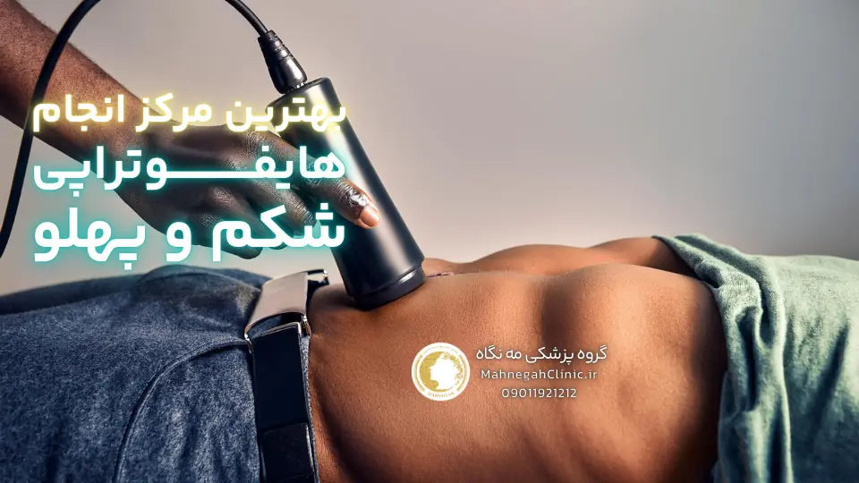
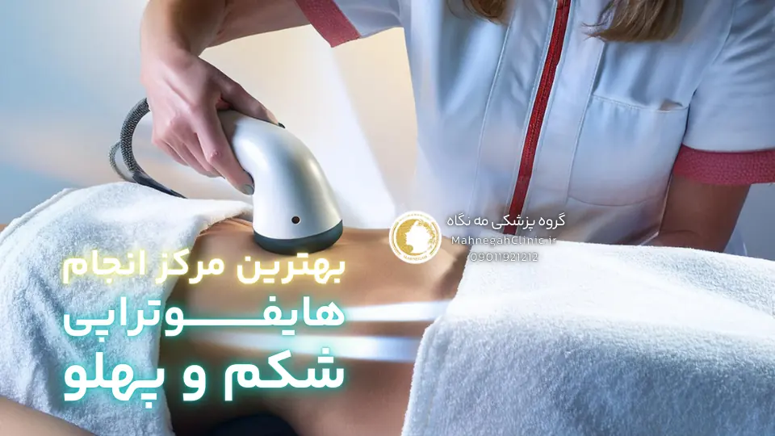
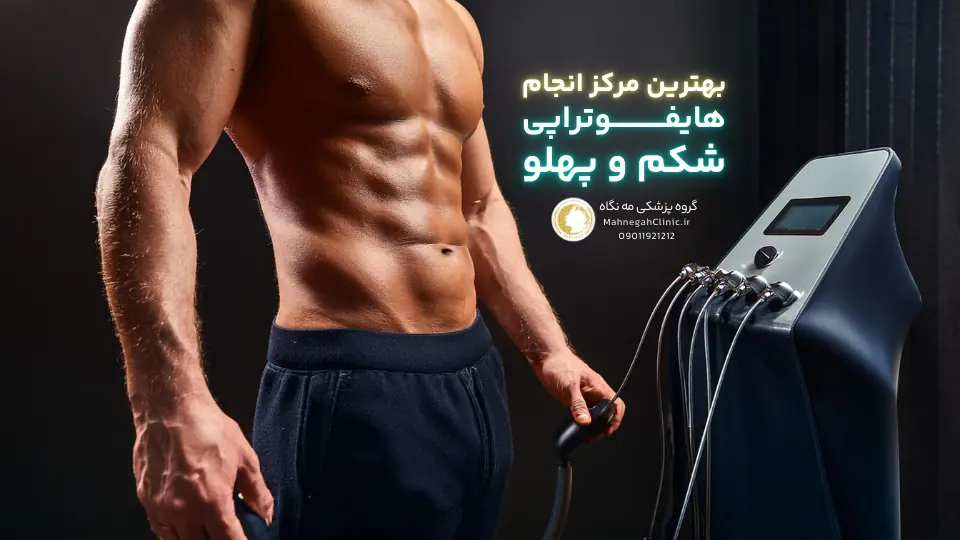
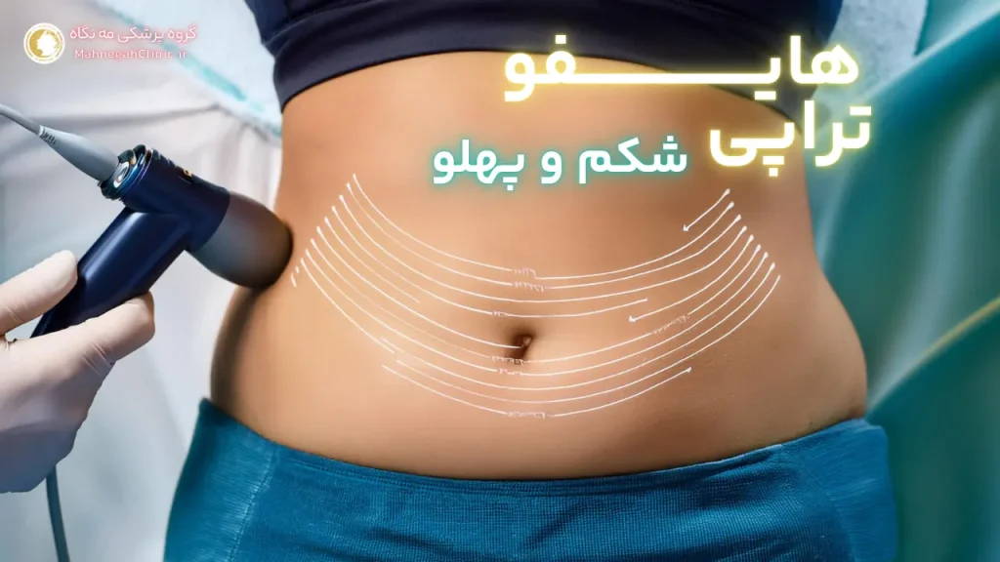

خانه / مجله / لاغری و کاهش وزن
بهترین مرکز هایفوتراپی شکم در سعادت آباد کجاست؟

اول از همه یادت باشه اگر میخای 10 درصد تخفیف ویژه از بهترین مرکز هایفوتراپی شکم در سعادت آباد بگیری اینجا کلیک کن و اسم و شمارت رو به من بده و یه مشاوره رایگان از خانم دکتر فریده محمدی بگیر!
1. هایفوتراپی شکم چیست؟
هایفوتراپی شکم یک روش غیرتهاجمی و نوین برای لاغری و تناسب اندام است که با استفاده از امواج اولتراسوند متمرکز با شدت بالا (HIFU) عمل میکند. این امواج با نفوذ به لایههای عمیق پوست، باعث ایجاد حرارت کنترلشده در بافت چربی میشوند. این حرارت باعث تخریب سلولهای چربی و در نتیجه کاهش سایز و چربی در ناحیه شکم میشود.
مکانیسم عملکرد هایفوتراپی شکم
در هایفوتراپی شکم، امواج اولتراسوند با دقت بالا به بافت چربی هدف تابیده میشوند. این امواج با عبور از لایههای سطحی پوست، به عمق مشخصی از بافت چربی میرسند و در آنجا متمرکز میشوند. تمرکز این امواج باعث ایجاد حرارت شدید در نقطه هدف میشود، در حالی که بافتهای اطراف آسیبی نمیبینند. این حرارت باعث تخریب سلولهای چربی و تحریک تولید کلاژن در پوست میشود. کلاژن باعث سفت شدن و لیفت پوست میشود و از شل شدن و افتادگی پوست پس از کاهش چربی جلوگیری میکند.
مزایای هایفوتراپی برای لاغری شکم - بهترین مرکز هایفوتراپی شکم در سعادت آباد
- غیرتهاجمی و بدون درد: هایفوتراپی شکم نیازی به برش، بیهوشی و دوران نقاهت ندارد و در طول جلسه درمانی، بیمار احساس درد یا ناراحتی نمیکند.
- اثربخشی بالا: این روش باعث کاهش قابل توجه سایز و چربی در ناحیه شکم میشود و نتایج آن معمولا پس از چند هفته قابل مشاهده است.
- ایمنی: هایفوتراپی شکم یک روش ایمن و تایید شده توسط سازمان غذا و داروی آمریکا (FDA) است و عوارض جانبی آن بسیار نادر و خفیف هستند.
- سفت شدن پوست: علاوه بر کاهش چربی، هایفوتراپی باعث تحریک تولید کلاژن و سفت شدن پوست شکم میشود.
- دوره نقاهت کوتاه: بیمار میتواند بلافاصله پس از جلسه درمانی به فعالیتهای روزمره خود بازگردد.
هایفوتراپی شکم یک روش موثر، ایمن و غیرتهاجمی برای لاغری و تناسب اندام است که میتواند به شما در دستیابی به شکمی صاف و خوشفرم کمک کند. اگر به دنبال یک روش لاغری بدون جراحی و عوارض هستید، هایفوتراپی شکم میتواند گزینه مناسبی برای شما باشد.

2. چرا سعادت آباد را برای هایفوتراپی شکم انتخاب کنیم؟
سعادت آباد، به عنوان یکی از مناطق پیشرفته و مدرن تهران، به مرکزی برای ارائه خدمات زیبایی و درمانی تبدیل شده است. این منطقه با تمرکز بر کیفیت و تخصص، دسترسی آسان و موقعیت مکانی مناسب، و تنوع مراکز و پزشکان متخصص، به انتخابی ایدهآل برای انجام هایفوتراپی شکم تبدیل شده است. در ادامه به بررسی دلایل انتخاب سعادت آباد برای این درمان میپردازیم.
تمرکز بر تخصص و کیفیت
مراکز زیبایی و درمانی در سعادت آباد، با بهرهگیری از کادر پزشکی متخصص و مجرب، و استفاده از تکنولوژیهای روز دنیا، خدمات با کیفیت و موثری را به مراجعین ارائه میدهند. این مراکز با رعایت استانداردهای بهداشتی و ایمنی، و ارائه مشاورههای تخصصی قبل و بعد از درمان، اطمینان خاطر را برای مراجعین فراهم میکنند.
دسترسی آسان و موقعیت مکانی مناسب - بهترین مرکز هایفوتراپی شکم در سعادت آباد
سعادت آباد با قرارگیری در شمال غرب تهران، و دسترسی آسان از طریق بزرگراههای اصلی و خیابانهای فرعی، به راحتی قابل دسترس است. همچنین، وجود پارکینگهای عمومی و خصوصی در این منطقه، مشکل پارک خودرو را برای مراجعین برطرف میکند. این دسترسی آسان و موقعیت مکانی مناسب، سعادت آباد را به گزینهای جذاب برای افرادی تبدیل میکند که به دنبال صرفهجویی در زمان و انرژی هستند.
تنوع مراکز و پزشکان متخصص
وجود تنوع مراکز و پزشکان متخصص در سعادت آباد، به مراجعین این امکان را میدهد تا با توجه به نیازها، بودجه و ترجیحات شخصی خود، بهترین گزینه را انتخاب کنند. این تنوع، رقابت سالمی را بین مراکز ایجاد میکند و باعث بهبود کیفیت خدمات و کاهش قیمتها میشود. همچنین، مراجعین میتوانند با مقایسه نظرات و تجربیات دیگران، بهترین مرکز و پزشک را برای خود انتخاب کنند.
با توجه به دلایل ذکر شده، سعادت آباد به عنوان یک منطقه پیشرو در ارائه خدمات زیبایی و درمانی، و با تمرکز بر تخصص، کیفیت، دسترسی آسان و تنوع، به انتخابی ایدهآل برای انجام هایفوتراپی شکم تبدیل شده است. اگر به دنبال یک مرکز معتبر و متخصص برای انجام این درمان هستید، سعادت آباد میتواند گزینه مناسبی برای شما باشد.
3. بهترین مرکز هایفوتراپی شکم در سعادت آباد کدام است؟
با وجود تعدد مراکز ارائه دهنده خدمات هایفوتراپی شکم در سعادت آباد، انتخاب بهترین مرکز میتواند چالشبرانگیز باشد. اما با در نظر گرفتن معیارهای کلیدی و انجام تحقیقات لازم، میتوانید بهترین مرکز را برای خود انتخاب کنید و از نتایج مطلوب این درمان بهرهمند شوید. در ادامه به بررسی این معیارها و راهکارهای انتخاب بهترین مرکز میپردازیم.
معیارهای انتخاب بهترین مرکز هایفوتراپی شکم در سعادت آباد
- تخصص و تجربه پزشکان: اطمینان حاصل کنید که پزشکان مرکز دارای تخصص و تجربه کافی در زمینه هایفوتراپی شکم هستند و با جدیدترین تکنیکها و دستگاهها آشنا هستند.
- استفاده از دستگاههای پیشرفته: تکنولوژیهای نوین در هایفوتراپی میتوانند نتایج بهتری را به همراه داشته باشند. بررسی کنید که مرکز از چه دستگاههایی استفاده میکند و آیا این دستگاهها به روز و کارآمد هستند یا خیر.
- رعایت استانداردهای بهداشتی و ایمنی: بهداشت و ایمنی در هر مرکز درمانی از اهمیت بالایی برخوردار است. اطمینان حاصل کنید که مرکز مورد نظر شما تمامی استانداردهای بهداشتی و ایمنی را رعایت میکند.
- نظرات و تجربیات مراجعین: نظرات و تجربیات مراجعین قبلی میتواند اطلاعات ارزشمندی را در اختیار شما قرار دهد. بررسی کنید که دیگران درباره مرکز مورد نظر چه میگویند و آیا از نتایج درمان خود راضی بودهاند یا خیر.
- قیمت و شرایط پرداخت: هزینه هایفوتراپی شکم میتواند در مراکز مختلف متفاوت باشد. قیمتها را مقایسه کنید و شرایط پرداخت را بررسی کنید تا مطمئن شوید که با بودجه شما سازگار است.
- مشاوره و پشتیبانی: یک مرکز خوب باید مشاورههای تخصصی قبل و بعد از درمان را ارائه دهد و در صورت نیاز، پشتیبانی لازم را به شما ارائه کند.
تحقیق و بررسی نظرات مراجعین
اینترنت و شبکههای اجتماعی میتوانند منابع خوبی برای تحقیق و بررسی نظرات مراجعین باشند. وبسایتها، صفحات اینستاگرام و گروههای تلگرامی مرتبط با مراکز هایفوتراپی را بررسی کنید و نظرات و تجربیات دیگران را بخوانید. همچنین میتوانید از دوستان و آشنایان خود که تجربه هایفوتراپی شکم داشتهاند، راهنمایی بگیرید.
مشاوره حضوری و ارزیابی اولیه - بهترین مرکز هایفوتراپی شکم در سعادت آباد
قبل از تصمیمگیری نهایی، بهتر است یک جلسه مشاوره حضوری با پزشک متخصص در مرکز مورد نظر داشته باشید. در این جلسه، پزشک وضعیت شما را ارزیابی میکند، انتظارات شما را بررسی میکند و در مورد روند درمان و نتایج احتمالی با شما صحبت میکند. این جلسه به شما کمک میکند تا تصمیم آگاهانهتری بگیرید و بهترین مرکز را برای خود انتخاب کنید.
با توجه به معیارهای ذکر شده و انجام تحقیقات لازم، میتوانید بهترین مرکز هایفوتراپی شکم در سعادت آباد را برای خود انتخاب کنید و از نتایج مطلوب این درمان بهرهمند شوید. به یاد داشته باشید که انتخاب یک مرکز معتبر و متخصص، نقش مهمی در موفقیت درمان و رضایت شما دارد.

4. هزینه هایفوتراپی شکم در سعادت آباد چقدر است؟
هزینه هایفوتراپی شکم در سعادت آباد میتواند تحت تأثیر عوامل مختلفی متغیر باشد. این عوامل میتوانند شامل وسعت ناحیه تحت درمان، تعداد جلسات مورد نیاز، نوع دستگاه مورد استفاده، تجربه و تخصص پزشک و موقعیت مکانی کلینیک باشند. در ادامه به بررسی این عوامل و ارائه راهکارهایی برای مقایسه قیمتها و یافتن گزینههای مقرون به صرفه میپردازیم.
عوامل موثر بر قیمت هایفوتراپی شکم
- وسعت ناحیه تحت درمان: هرچه ناحیه تحت درمان بزرگتر باشد، هزینه هایفوتراپی نیز افزایش مییابد. به عنوان مثال، هایفوتراپی کل شکم و پهلوها نسبت به هایفوتراپی فقط ناحیه شکم، هزینه بیشتری خواهد داشت.
- تعداد جلسات مورد نیاز: تعداد جلسات مورد نیاز برای دستیابی به نتایج مطلوب، به میزان چربی و شلی پوست در ناحیه تحت درمان بستگی دارد. هرچه تعداد جلسات بیشتر باشد، هزینه کلی درمان نیز افزایش مییابد.
- نوع دستگاه مورد استفاده: دستگاههای هایفوتراپی با تکنولوژیهای پیشرفتهتر و قابلیتهای بیشتر، معمولا هزینه بالاتری دارند.
- تجربه و تخصص پزشک: پزشکان با تجربه و تخصص بالا، معمولا هزینه بیشتری برای خدمات خود دریافت میکنند.
- موقعیت مکانی کلینیک: کلینیکهای واقع در مناطق پر رفت و آمد و با امکانات بیشتر، معمولا هزینههای بالاتری دارند.
مقایسه قیمتها در مراکز مختلف
برای مقایسه قیمتها، بهتر است با چند مرکز مختلف در سعادت آباد تماس بگیرید و در مورد هزینه هایفوتراپی شکم با توجه به شرایط خود، اطلاعات لازم را کسب کنید. همچنین میتوانید وبسایتها و صفحات اجتماعی کلینیکها را بررسی کنید و قیمتها را مقایسه کنید.
تخفیفها و پیشنهادات ویژه
برخی از کلینیکها ممکن است تخفیفها یا پیشنهادات ویژهای را برای هایفوتراپی شکم ارائه دهند. این تخفیفها میتوانند شامل تخفیف برای جلسات متعدد، تخفیف برای مراجعین جدید یا تخفیفهای فصلی باشند. در هنگام مقایسه قیمتها، به این تخفیفها و پیشنهادات نیز توجه کنید.
دریافت تخفیف 10 درصدی بدون سوال! اینجا کلیک کن
قیمت هایفوتراپی شکم در سعادت آباد میتواند متغیر باشد، اما با تحقیق و مقایسه، میتوانید گزینهای را پیدا کنید که با بودجه و نیازهای شما سازگار باشد. به یاد داشته باشید که کیفیت درمان و تخصص پزشک از اهمیت بالایی برخوردار است و نباید تنها بر اساس قیمت تصمیمگیری کنید.

5. عوارض هایفوتراپی شکم چیست؟ بهترین مرکز هایفوتراپی شکم در سعادت آباد
هایفوتراپی شکم به عنوان یک روش غیرتهاجمی و ایمن شناخته میشود، اما مانند هر روش درمانی دیگری، ممکن است با عوارض جانبی همراه باشد. اکثر این عوارض خفیف و موقتی هستند و به سرعت برطرف میشوند. با این حال، آگاهی از این عوارض و مراقبتهای پس از هایفوتراپی میتواند به کاهش احتمال بروز آنها و بهبود روند بهبودی کمک کند. در ادامه به بررسی عوارض جانبی شایع و نادر هایفوتراپی شکم و راهکارهای کاهش آنها میپردازیم.
عوارض جانبی شایع و نادر
- قرمزی و تورم: این عارضه شایعترین عارضه جانبی هایفوتراپی شکم است و معمولا چند ساعت یا چند روز پس از درمان برطرف میشود. استفاده از کمپرس سرد و کرمهای تسکیندهنده میتواند به کاهش قرمزی و تورم کمک کند.
- درد و حساسیت: برخی افراد ممکن است پس از هایفوتراپی، درد یا حساسیت خفیفی در ناحیه تحت درمان احساس کنند. این درد معمولا با مسکنهای بدون نسخه قابل کنترل است و طی چند روز برطرف میشود.
- کبودی: در موارد نادر، ممکن است کبودی خفیفی در ناحیه تحت درمان ایجاد شود. این کبودی معمولا طی یک هفته برطرف میشود.
- بیحسی یا گزگز: برخی افراد ممکن است پس از هایفوتراپی، بیحسی یا گزگز موقتی در ناحیه تحت درمان احساس کنند. این عارضه معمولا طی چند روز یا چند هفته برطرف میشود.
- عوارض نادر: در موارد بسیار نادر، ممکن است عوارض جدیتری مانند سوختگی، عفونت یا آسیب به بافتهای عصبی رخ دهد. انتخاب یک پزشک متخصص و مجرب و رعایت دقیق دستورالعملهای پس از درمان، میتواند احتمال بروز این عوارض را به حداقل برساند.
مراقبتهای پس از هایفوتراپی
- استفاده از کمپرس سرد: استفاده از کمپرس سرد در 24 ساعت اول پس از درمان میتواند به کاهش تورم و التهاب کمک کند.
- اجتناب از فعالیتهای سنگین: در چند روز اول پس از درمان، از انجام فعالیتهای سنگین و ورزشهای شدید خودداری کنید.
- نوشیدن آب فراوان: نوشیدن آب فراوان به دفع سلولهای چربی تخریب شده و بهبود روند بهبودی کمک میکند.
- رعایت رژیم غذایی سالم: رعایت یک رژیم غذایی سالم و متعادل به حفظ نتایج هایفوتراپی و جلوگیری از تجمع مجدد چربی کمک میکند.
- مراجعه به پزشک در صورت بروز هرگونه عارضه: در صورت بروز هرگونه عارضه غیرمعمول یا طولانی مدت، به پزشک خود مراجعه کنید.
انتخاب پزشک متخصص و مجرب
انتخاب یک پزشک متخصص و مجرب که با تکنیکهای هایفوتراپی آشنا باشد و از دستگاههای پیشرفته استفاده کند، نقش مهمی در کاهش احتمال بروز عوارض و دستیابی به نتایج مطلوب دارد. قبل از انتخاب پزشک، تحقیقات لازم را انجام دهید و نظرات مراجعین قبلی را بررسی کنید.
عوارض هایفوتراپی شکم معمولا خفیف و موقتی هستند، اما آگاهی از آنها و رعایت مراقبتهای پس از درمان میتواند به کاهش احتمال بروز آنها و بهبود روند بهبودی کمک کند. با انتخاب یک پزشک متخصص و مجرب و رعایت دستورالعملهای پس از درمان، میتوانید از مزایای هایفوتراپی شکم بهرهمند شوید و به شکمی صاف و خوشفرم دست یابید.

6. دستگاه هایفوتراپی شکم چه ویژگیهایی دارد؟
دستگاههای هایفوتراپی شکم با بهرهگیری از تکنولوژیهای پیشرفته، امکان تنظیم دقیق پارامترها برای هر فرد و همچنین ایمنی و اثربخشی بالا، به ابزاری قدرتمند در لاغری و تناسب اندام تبدیل شدهاند. در ادامه به بررسی ویژگیهای کلیدی این دستگاهها میپردازیم.
تکنولوژیهای نوین و پیشرفته
دستگاههای مدرن هایفوتراپی شکم از تکنولوژیهای نوینی مانند تصویربرداری اولتراسوند، سیستم خنککننده و سنسورهای حرارتی بهره میبرند. این تکنولوژیها به پزشک کمک میکنند تا با دقت بالا، عمق نفوذ امواج، شدت انرژی و دمای بافت را کنترل کند و از آسیب به بافتهای اطراف جلوگیری کند. همچنین، برخی دستگاهها دارای قابلیتهای اضافی مانند لیفتینگ پوست و تحریک کلاژنسازی هستند که به بهبود نتایج درمان کمک میکنند.
تنظیمات قابل تنظیم برای هر فرد
هر فرد دارای ویژگیهای بدنی و نیازهای متفاوتی است. دستگاههای هایفوتراپی شکم با قابلیت تنظیم پارامترهایی مانند عمق نفوذ، شدت انرژی و تعداد شاتها، امکان شخصیسازی درمان را برای هر فرد فراهم میکنند. پزشک با توجه به ضخامت لایه چربی، شلی پوست و اهداف درمانی هر فرد، تنظیمات دستگاه را بهینه میکند تا بهترین نتایج را به دست آورد.
ایمنی و اثربخشی دستگاه در بهترین مرکز هایفوتراپی شکم در سعادت آباد
دستگاههای هایفوتراپی شکم با تاییدیههای لازم از سازمانهای معتبر جهانی، ایمنی و اثربخشی خود را اثبات کردهاند. این دستگاهها با تمرکز دقیق امواج اولتراسوند و کنترل دما، از آسیب به بافتهای اطراف جلوگیری میکنند و عوارض جانبی را به حداقل میرسانند. همچنین، مطالعات بالینی نشان دادهاند که هایفوتراپی شکم میتواند به کاهش قابل توجه سایز و چربی در ناحیه شکم و بهبود ظاهر پوست کمک کند.
با توجه به ویژگیهای ذکر شده، دستگاههای هایفوتراپی شکم به ابزاری موثر، ایمن و قابل تنظیم برای لاغری و تناسب اندام تبدیل شدهاند. انتخاب یک مرکز مجهز به دستگاههای پیشرفته و پزشک متخصص در استفاده از این دستگاهها، میتواند به شما در دستیابی به نتایج مطلوب و رضایتبخش کمک کند.
7. عکس و فیلم قبل و بعد هایفوتراپی شکم
یکی از بهترین راهها برای ارزیابی اثربخشی هایفوتراپی شکم، مشاهده عکس و فیلم قبل و بعد از انجام این روش درمانی است. این تصاویر و فیلمها به شما امکان میدهند تا نتایج واقعی هایفوتراپی را بر روی افراد مختلف با شرایط بدنی متفاوت مشاهده کنید و میزان تاثیرگذاری آن را بر روی کاهش چربی و سفت شدن پوست شکم ارزیابی کنید.
مشاهده نتایج واقعی در بهترین مرکز هایفوتراپی شکم در سعادت آباد
عکسها و فیلمهای قبل و بعد، به شما این امکان را میدهند تا نتایج واقعی هایفوتراپی را بر روی افراد مختلف با شرایط بدنی متفاوت مشاهده کنید. این تصاویر میتوانند شامل افرادی با میزان چربی و شلی پوست متفاوت باشند و به شما کمک کنند تا انتظارات واقعبینانهای از نتایج این درمان داشته باشید.
بررسی تصاویر و فیلمها از زوایای مختلف
برای ارزیابی دقیقتر نتایج هایفوتراپی، بهتر است تصاویر و فیلمها را از زوایای مختلف بررسی کنید. این کار به شما کمک میکند تا میزان کاهش چربی و سفت شدن پوست را در تمام نواحی شکم مشاهده کنید و تاثیر هایفوتراپی را بر روی فرم کلی بدن ارزیابی کنید.
مقایسه نتایج با انتظارات شخصی
قبل از انجام هایفوتراپی، بهتر است انتظارات خود را از این درمان مشخص کنید و با پزشک خود در میان بگذارید. سپس، با مشاهده عکسها و فیلمهای قبل و بعد، میتوانید نتایج واقعی را با انتظارات خود مقایسه کنید و ببینید که آیا هایفوتراپی میتواند به شما در دستیابی به اهداف زیبایی و تناسب اندام کمک کند یا خیر.
عکس و فیلم قبل و بعد هایفوتراپی شکم میتواند به شما در تصمیمگیری آگاهانهتر درباره این درمان کمک کند. با مشاهده این تصاویر و فیلمها، میتوانید اثربخشی هایفوتراپی را ارزیابی کنید، انتظارات واقعبینانهای از نتایج داشته باشید و بهترین مرکز و پزشک را برای انجام این درمان انتخاب کنید.

8. هایفوتراپی شکم و پهلو: راهکاری جامع برای لاغری
هایفوتراپی شکم و پهلو یک روش درمانی جامع و موثر برای افرادی است که به دنبال کاهش چربی و سفت شدن پوست در هر دو ناحیه شکم و پهلو هستند. این روش با بهرهگیری از تکنولوژی هایفو، به صورت همزمان بر روی هر دو ناحیه عمل میکند و نتایج چشمگیری را در بهبود فرم بدن و تناسب اندام به ارمغان میآورد. در ادامه به بررسی مزایای این روش درمانی میپردازیم.
مزایای همزمان هایفوتراپی شکم و پهلو - بهترین مرکز هایفوتراپی شکم در سعادت آباد
- کاهش سایز و چربی در نواحی پهلو و شکم: هایفوتراپی با تخریب سلولهای چربی در هر دو ناحیه شکم و پهلو، به کاهش سایز و چربی در این نواحی کمک میکند و منجر به بهبود فرم بدن و تناسب اندام میشود.
- سفت شدن پوست در هر دو ناحیه: هایفوتراپی علاوه بر کاهش چربی، باعث تحریک تولید کلاژن و سفت شدن پوست در هر دو ناحیه شکم و پهلو میشود و از شل شدن و افتادگی پوست پس از کاهش چربی جلوگیری میکند.
- صرفهجویی در زمان و هزینه: انجام همزمان هایفوتراپی شکم و پهلو، نسبت به انجام جداگانه این درمانها، باعث صرفهجویی در زمان و هزینه میشود.
- دستیابی به تناسب اندام ایدهآل: هایفوتراپی شکم و پهلو با بهبود فرم بدن در هر دو ناحیه، به شما کمک میکند تا به تناسب اندام ایدهآل خود دست یابید و اعتماد به نفس بیشتری داشته باشید.
- عدم نیاز به جراحی و بیهوشی: هایفوتراپی یک روش غیرتهاجمی است و نیازی به جراحی، بیهوشی و دوران نقاهت ندارد.
- ایمنی و اثربخشی بالا: هایفوتراپی یک روش ایمن و تایید شده است و عوارض جانبی آن بسیار نادر و خفیف هستند. همچنین، مطالعات بالینی نشان دادهاند که این روش درمانی اثربخشی بالایی در کاهش چربی و سفت شدن پوست دارد.
هایفوتراپی شکم و پهلو یک راهکار جامع و موثر برای افرادی است که به دنبال کاهش چربی و سفت شدن پوست در هر دو ناحیه هستند. این روش با بهرهگیری از تکنولوژی هایفو، به صورت همزمان بر روی هر دو ناحیه عمل میکند و نتایج چشمگیری را در بهبود فرم بدن و تناسب اندام به ارمغان میآورد. اگر به دنبال یک روش غیرتهاجمی، ایمن و موثر برای لاغری و تناسب اندام هستید، هایفوتراپی شکم و پهلو میتواند گزینه مناسبی برای شما باشد.
سوالات متداول - بهترین مرکز هایفوتراپی شکم در سعادت آباد
روشی غیرتهاجمی برای لاغری و سفت کردن پوست شکم با استفاده از امواج اولتراسوند.
تمرکز بر تخصص، دسترسی آسان، تنوع مراکز و پزشکان متخصص.
بستگی به عوامل مختلفی دارد، اما با تحقیق و مقایسه میتوان گزینههای مقرون به صرفه را یافت.
عوارض معمولا خفیف و موقتی هستند، مانند قرمزی، تورم و درد خفیف.
کاهش سایز و چربی، سفت شدن پوست، صرفهجویی در زمان و هزینه، دستیابی به تناسب اندام ایدهآل.